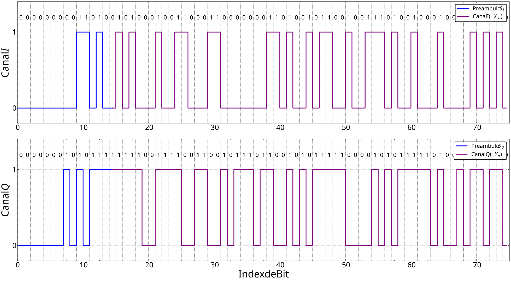

Multiplexer
__init__()
Initializes the multiplexer used on transmission. Used to concatenate the input data vectors \(X[n]\) and \(Y[n]\) with the preamble vectors \(S_I[n]\) and \(S_Q[n]\), returning the concatenated vectors \(X[n]\) and \(Y[n]\). The multiplexing process is given by the expression below.
\[
\begin{align}
X[n] = S_I[n] \oplus X[n] \text{ , } \quad Y[n] = S_Q[n] \oplus Y[n]
\end{align}
\]
Examples:
>>> import argos3
>>> import numpy as np
>>>
>>> Si = np.random.randint(0,2,15)
>>> Sq = np.random.randint(0,2,15)
>>>
>>> X = np.random.randint(0,2,30)
>>> Y = np.random.randint(0,2,30)
>>>
>>> mux = argos3.Multiplexer()
>>>
>>> Xn, Yn = mux.concatenate(Si, Sq, X, Y)
>>>
>>> print(Xn)
[0 0 0 1 0 0 1 0 0 1 1 0 0 0 1 0 0 0 0 0 0 0 1 1 0 1 0 1 0 0 1 0 1 0 1 1 1
0 1 0 1 0 0 0 1]
>>>
>>> print(Yn)
[0 1 1 0 0 0 1 1 0 0 0 1 1 0 0 1 1 0 0 0 1 1 0 1 1 0 1 1 0 1 1 0 0 1 0 1 1
0 1 0 0 1 1 1 0]
- Bitstream Plot Example:

concatenate(SI, SQ, Xn, Yn)
Concatenates the input data vectors \(X[n]\) and \(Y[n]\) with the preamble vectors \(S_I[n]\) and \(S_Q[n]\), returning the concatenated vectors \(X[n]\) and \(Y[n]\).
Parameters:
| Name | Type | Description | Default |
|---|---|---|---|
SI
|
ndarray
|
Input vector \(S_I[n]\). |
required |
SQ
|
ndarray
|
Input vector \(S_Q[n]\). |
required |
Xn
|
ndarray
|
Input vector \(X[n]\). |
required |
Yn
|
ndarray
|
Input vector \(Y[n]\). |
required |
Returns:
| Name | Type | Description |
|---|---|---|
Xn |
ndarray
|
Concatenated vector \(X[n]\). |
Yn |
ndarray
|
Concatenated vector \(Y[n]\). |
Raises:
| Type | Description |
|---|---|
AssertionError
|
If the vectors I and Q do not have the same length in both channels. |